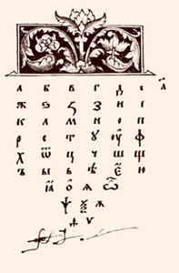
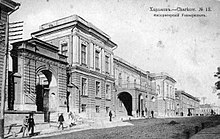
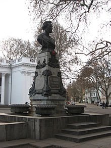
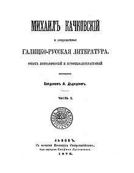
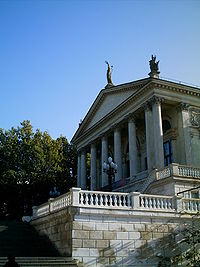

Русский язык на Украине
Материал из Википедии — свободной энциклопедии
Русский язык на Украине (укр. Російська мова в Україні) — один из двух наиболее распространённых
языков общения населения Украины. В ходе Всеукраинской переписи населения 2001 года родным русский
язык назвали 29,6 % участников, в том числе 14,8 % украинцев[1][2][3]. Однако независимые оценки
показывают гораздо бо́льшую распространённость русского языка и его фактическое преобладание над
украинским; заниженные результаты переписи обычно объясняют тем, что многие люди, считающие себя
украинцами, назвали своим родным языком украинский в силу своего национального самосознания, хотя их
первым языком (или одним из родных языков) для них является русский.Перейти к разделу
«#Распространённость русского языка на Украине»
Русский язык не имеет статуса государственного языка Украины, но в 2012—2018 годах являлся
официальным языком в южных и восточных регионах страны. В обществе постоянно идут дискуссии о
статусе русского языка.
История русского языка на Украине
Разделение русского и украинского языков

Первый кириллический букварь — «Азбука» Ивана Фёдорова. Издан в 1574 году во Львове[4]
Само происхождение русского и украинского языков по-разному трактовалось разными языковедческими
школами. Наиболее распространённая в России точка зрения заключается в том, что русский и
украинский языки произошли независимо из общего древнерусского языка, что было связано с
разделением славянских племён и/или государств, причём различия между языками наметились (по
разным данным) в IX—XIII веках, а окончательное формирование произошло в XIV веке[5][6]. Этой
концепции в целом придерживаются современные лингвисты, и отдельные споры ведутся лишь по
вопросу, на каком собственно этапе расхождения диалектов их можно считать отдельными языками. Но
существовали и крайние точки зрения, носители которых считали украинский язык по сути русским,
но загрязнённым большим количеством полонизмов (первым эту мысль сформулировал Михаил Ломоносов
в первой половине XVIII века[7], впоследствии она не раз повторялась[8][9]; хотя отдельные
учёные считают эту точку зрения «шовинистической»[5][10], в последнее время она получила широкое
распространение в популярных изданиях определённой идеологической направленности). Их оппоненты,
напротив, утверждали, что украинский язык[11] — это древнерусский язык, использовавшийся как
народный язык Древнерусского государства, в то время как русский язык — результат загрязнения
украинского тюркизмами и заимствованиями из старославянского (церковнославянского)
языка[12][13]. В реальности же количество полонизмов и тюркизмов в обоих языках относительно
невелико, и они не являются сколько-нибудь значимым фактором, а книжный церковнославянский влиял
больше на литературную языковую норму.
Большинство исследователей сходятся в том, что до начала процессов стандартизации русского и
украинского языка язык людей, проживающих на современной территории России и Украины, изменялся
от Москвы до Киева достаточно плавно, не позволяя провести чёткую региональную границу между
русским и украинским языком[5] (см. Диалектный континуум). Ещё в XIX веке при составлении своего
знаменитого словаря Даль обратил внимание на это обстоятельство:
Возьми у нас в былое время Новгород, Псков или Суздаль перевес над
Москвою, и
нынешний московский язык слыл бы местным наречием. Поэтому не было бы повода почитать
московское
наречие более чистым и правильным, чем мало- или белорусское, если бы это наречие не
обратилось
бы в язык правительства, письменности и просвещения[14].
М. Максимович в 1839 году писал в своей «Истории древней русской словесности»:
Собственно Русским языком называется у нас теперь язык Великороссиян, которые сами себя зовут
и в Малороссии называются собственно Русскими: народный же язык Южной Руси называется
обыкновенно Малороссийским наречием… Но в Галиции и по сю пору тамошний язык не перестал
называться просто языком Русским — тем именем, которое и всей Южно-Русской речи принадлежало
исстари, которым называлась она первая, ещё прежде чем усвоилось оно языку Великороссиян
(как и самое имя Руси или Русской земли сперва принадлежало Киевской земле)
— Максимович, М.: Собрание сочинений. – Т. 3.: Языкознание. История
словесности. Киев 1880.
с. 398
Дополнительным фактором, способствовавшим углублению языковых различий, стал политический распад
Киевской Руси. Есть предположение, что если бы его не произошло, то киевское наречие по праву
столичного, вероятно, стало бы доминирующим языком всех восточных славян[5]. Изоляция и
обособление древнерусских земель резко усилились в XIII веке после монгольского нашествия. В
XIV—XV веках они оказались в составе разных государств: южные и западные земли вошли в состав
Великого княжества Литовского и Русского, крайне западные — прикарпатские — в состав Польши и
Венгрии, северные же и северо-восточные постепенно объединились под властью Великого княжества
Московского.
XVI—XVIII века
В XVI веке бо́льшая часть территории современной Украины входила в состав Речи Посполитой, и
великорусский язык здесь почти не употреблялся: население говорило на малорусском языке,
администрация и городское население также использовало польский и западнорусский языки («проста
руска мова»). В то же время посетивший в 1523—1524 годах великие княжества Литовское и
Московское посол римского папы Климента VII Алберт Кампензе писал в Рим, что жители Руси как
Литовской, так и Московской считаются одним народом, поскольку «говорят одним языком и
исповедуют одну веру»[15]. На засилье «московского языка» в Литве жаловался литовский писатель
XVI века Михалон Литвин[16], а король польский и великий князь литовский Ян II Казимир, выступая
на сейме, указывал, что главная угроза для Речи Посполитой заключается в тяготении населения
малорусских и белорусских земель к Москве, «связанной с ними языком и верой»[17].
С другой стороны, Слободская Украина в конце XV — начале XVI века относилась к Великому княжеству
Московскому, и её заселение происходило как украиноязычными выходцами (так называемыми
«черкасами») с территорий, контролировавшихся Польшей (Речью Посполитой), так и русскоязычными
выходцами с территорий Московской Руси[18]. Первоначально переселенцы селились отдельно друг от
друга, нередко образуя «парные» сёла «Русская Лозовая» и «Черкасская Лозовая», «Русские Тишки» и
«Черкасские Тишки» и другие. В 1599 году по указу Бориса Годунова на реке Оскол было начато
строительство крепости и первого города Слободской Украины — Цареборисова (ныне Червоный Оскол).
В 1635—1658 годы были выстроены новые города, которые сформировали Белгородскую оборонительную
линию, необходимую для противостояния кочевникам.
Длительное противостояние между Москвой и Варшавой завершилось заключением Андрусовского
договора, согласно которому к Московской Руси в 1667 году отошли Левобережье (современные
Черниговская и Полтавская области, а также отдельные районы Сумской, левобережье Киевской и
Черкасской областей) и город Киев.
Введение великорусского языка на Украине
После вхождения Войска Запорожского в состав Русского царства официальным языком администрации на
землях казаков стал великорусский язык, сменивший польский. При этом большинство населения
региона продолжало использовать в быту малорусский язык[10].
Царским правительством последовательно проводился комплекс мер, направленный на более тесную
интеграцию этих земель и местного населения с Русским царством, предшественником Российской
империи — в том числе предпринимало шаги, направленные на то, чтобы именно русский язык стал
доминирующим языком на присоединённых территориях[18].
Второй Малороссийской коллегии (под руководством П. Румянцева-Задунайского) было поручено ввести
великорусский язык как обязательный в школах и печатных книгах вместо западнорусского. В 1765
году на великорусский язык преподавания с латинского была переведена Киево-Могилянская академия,
в то время одно из самых влиятельных высших учебных заведений Восточной Европы[18].
В 1720 году Пётр I выпустил указ, требующий издавать литературу исключительно на великорусском
языке: «Дабы внов книг никаких, кроме церковных прежних изданий, не печатать, а оные старые
книги с такими же церковными книгами справливать прежде печати, с теми великороссийскими
печатьми, дабы никакой розни и особаго наречия в них не было». В 1721 году вышел дополнительный
указ, вновь требующий «исправления ради и согласия с великороссийскими» изданиями. Указы
выполнялись буквально — например, в 1724 году архимандрит Киево-Печерской лавры был оштрафован
на очень большую по тем временам сумму в 1000 рублей за издание книги «не совсем с
великороссийским языком сходную», тираж книги был конфискован, а типография — перевезена с
территории Украины в Москву[10]. Ходатайство Киево-Печерской лавры 1769 года о разрешении
печатать для «малороссийского» населения азбуки на «западнорусском» письменном языке Святейший
Синод отклонил[10].
К концу XVIII века в результате войн с Речью Посполитой в состав России вошёл основной массив
современной территории Украины (за исключением Восточной Галиции, Закарпатья и Северной
Буковины), а в результате войн с Османской империей и её вассалом Крымским ханством — Крым,
Северное Причерноморье и Приазовье, в которых практически отсутствовало славянское население. В
последней четверти XVIII века, с присоединением причерноморских и донецких степей к России,
началось стихийное крестьянское и государственное освоение этих территорий великороссами,
выходцами из центральных губерний; было основано большинство крупных городов юго-востока
современной Украины: Запорожье (1770), Екатеринослав (1776), Херсон и Мариуполь (1778),
Севастополь (1783), Симферополь и Мелитополь (1784), Николаев (1789), Одесса (1794), Луганск
(основание Луганского завода — 1795). В связи с тем, что язык всей администрации был
великорусским, преподавание в школах велось на великорусском языке, а население городов было
смешанным, малорусская часть городского населения относительно быстро русифицировалась[19].
1801—1917

Харьковский университет, первый русский университет на Украине, был основан в 1804 году
В связи с мерами по продвижению русского языка, предпринимавшимися царским правительством на
протяжении 80 лет, к началу XIX века в Малороссии сложилась двойственная ситуация: с одной
стороны, большая часть населения продолжала говорить на малорусском наречии, с другой стороны,
этот народный язык начал восприниматься как «мужицкий» и неграмотный, а система образования была
переведена на русский язык. Это привело к тому, что даже в семейном общении представители
украинской интеллигенции не всегда говорили на украинском[20]. Лишь в 1798 году было
опубликовано первое произведение на малорусском наречии — это была «Энеида» Ивана Котляревского.
Эта книга переиздавалась ещё дважды в течение следующих 10 лет[21].
Распределение восточнославянских народностей Европейской части России по родному языку на
1897 год согласно Всероссийской переписи
В первые десятилетия XIX века на Западной Украине, которая в это время находилась под властью
Австро-Венгрии, выходят в свет сочинения на украинском языке, созданном на основе народных
говоров. В то же время деятели русского движения в Галиции и Закарпатье пишут на общерусском
(русском литературном) языке — в Галиции первым стал использовать русский язык Д. Зубрицкий,
первый галицко-русский историк, считающийся также первым украинским историком из Галиции, а в
Закарпатье — «будитель русинов» А. Духнович. Некоторые деятели тогдашнего украинофильского
движения, особенно те, кто жил на Западной Украине, также разделяли официальную точку зрения,
согласно которой русский литературный язык является «общерусским», «надплеменным» языком, общим
для «малороссов» и «великороссов», что было вызвано противостоянием Польше и польскому
языку[21].

Памятник Александру Пушкину в Одессе, установлен в 1888 году на средства горожан
На русском языке писали и говорили такие крупнейшие учёные России того времени, как первый
Нобелевский лауреат — уроженец Украины, биолог И. Мечников, хирурги Н. Пирогов и В. Филатов,
геолог Н. Андрусов, терапевт Н. Стражеско и многие другие.
Политика, направленная на продвижение русского языка на Украине, последовательно продолжалась в
течение всего XIX века и в начале XX века вплоть до Октябрьской революции 1917 года и
последующего восстановления советской власти на Украине[22]. В 1804 году на базе основанного в
1727 году Харьковского коллегиума, преподавательский состав которого состоял в основном из
профессоров-выпускников Киево-могилянской академии, был создан Харьковский университет — первый
русскоязычный университет на Украине. В 1833 году в Киеве был основан Университет святого
Владимира, а в 1865 году в Одессе — Новороссийский университет.

Исследование о русской литературе в Галиции (Австро-Венгрия), издано во Львове в 1876
В школьном образовании там, где только было возможно, украинский язык заменяли русским. Даже в
пределах Слободской Украины, где население было смешанным, российским чиновникам приходилось
применять специальные меры по устранению украинского языка из системы образования и замене его
на русский. Например, писатель Г. Данилевский приводит такое свидетельство: «В 1807 году мы
застали в училищах самого Харькова учителей, что так и резали по-украински с учениками; да мы,
то есть новоприбывшие из семинарии учителя, по распоряжении начальства сломили их и приучили
говорить по-русски»[23].
Дополнительные опасения у царского правительства вызывало стремление украинского населения к
независимости. Эти настроения были присущи и украинцам в соседней Австро-Венгрии[22]. Кроме
этого среди украинофилов, недовольных сложившимся положением, в конце XIX века росли
социалистические настроения. Обеспокоенный попыткой перевода Нового Завета на украинский язык,
министр образования П. Валуев направил всем цензурным комитетам циркуляр, прекративший выпуск
религиозной, научно-популярной литературы и учебников на «малорусском» языке. Циркуляр разрешал
публикацию только произведений «изящной литературы», но в нём также утверждалось, что
«возбуждение этого вопроса <печатание книг на украинском языке> принято большинством малороссиян
с негодованием,… Они весьма основательно доказывают, что никакого особенного малороссийского
языка не было, нет и быть не может…»[18]. В связи с запретом издания литературы на
украинском языке на Украине, из Австро-Венгрии начали ввозить литературу на украинском
языке, в том числе сепаратистского содержания. Российское правительство отреагировало на
это, и в 1876 году император Александр II подписал Эмский указ, запрещавший ввоз в пределы
Российской империи без особого разрешения «каких бы то ни было книг и брошюр, издаваемых за
границей на малорусском наречии», и содержавший требование, чтобы «в произведениях же
изящной словесности не было допускаемо никаких отступлений от общепринятого русского
правописания»[18]. К концу XIX века цензура украиноязычных изданий ослабла[21].
Первые периодические издания и библиотеки на территории современной Украины также ориентировались
на русский язык: в Харькове в 1811 году[24] (по другим данным — в 1812 г.[25]) вышла газета
«Еженедельник», первая в Харькове и на Украине, в 1816 — первый журнал, а в Одессе в 1830 году
была открыта первая публичная библиотека (вторая в Российской империи)[26].
Художественная литература на украинском языке в XIX веке официально не запрещалась, при условии,
что сюжет произведения не призывал прямо или косвенно к отторжению Украины от России. Однако со
страниц популярной печати Российской империи в адрес поэтов и прозаиков «Малороссии», решившихся
писать на украинском языке, звучала острая критика, пренебрежение и призывы писать по-русски.
Например, известный литературный критик В. Белинский высказывался по этому поводу так:
Какая глубокая мысль в этом факте, что Гоголь, страстно любя Малороссию, все-таки стал писать
по-русски, а не по-малороссийски! Но Гоголь не всем может быть примером. Тем не менее жалко
видеть, когда и маленькое дарование попусту тратит свои силы, пиша по-малороссийски — для
малороссийских крестьян. В самом деле, содержание таких повестей всегда однообразно, всегда
одно и то же, а главный интерес их — мужицкая наивность и наивная прелесть мужицкого
разговора[27].
Читателям «Отечественных записок» известно мнение наше насчёт произведений так называемой
малороссийской литературы. Не станем повторять его здесь и только скажем, что новый опыт
спиваний г. Шевченка, привилегированного, кажется, малороссийского поэта, убеждает нас ещё
более, что подобного рода произведения издаются только для услаждения и назидания самих
авторов: другой публики у них, кажется, нет. Если же эти господа кобзари думают своими
поэмами принести пользу низшему классу своих соотчичей, то в этом очень ошибаются: их поэмы,
несмотря на обилие самых вульгарных и площадных слов и выражений, лишены простоты вымысла и
рассказа, наполнены вычурами и замашками, свойственными всем плохим пиитам, — часто
нисколько не народны, хотя и подкрепляются ссылками на историю, песни и предания, — и,
следовательно, по всем этим причинам — они непонятны простому народу и не имеют в себе
ничего с ним симпатизирующего[28].
Советский период
Ситуация с русским языком на Украине изменилась с приходом к власти большевиков. Ещё до своего
прихода к власти, в борьбе с царским режимом Российской империи, большевики декларировали
принципы равенства и свободного развития всех национальных меньшинств и народностей России.
Более того, в противовес либералам, русские марксисты выступали против обязательного
государственного языка. Так, В. Ленин, в частности, отмечал (1914)[29]:
Что означает обязательный государственный язык? Это значит практически, что язык
великороссов, составляющих меньшинство населения России, навязывается всему остальному
населению России. В каждой школе преподавание государственного языка должно быть
обязательно. Все официальные делопроизводства должны обязательно вестись на государственном
языке, а не на языке местного населения… Мы стоим за то, чтобы каждый житель России имел
возможность научиться великому русскому языку. Мы не хотим только одного: элемента
принудительности. Мы не хотим загонять в рай дубиной. Ибо, сколько красивых фраз о
«культуре» вы ни сказали бы, обязательный государственный язык связан с принуждением,
вколачиванием. Мы думаем, что великий и могучий русский язык не нуждается в том, чтобы кто
бы то ни было должен был изучать его из-под палки
Следуя «ленинским заветам», формально в СССР официальный язык не вводился вплоть до 1990
года[30][31].
Сразу после Октябрьской революции, на Втором съезде Советов, была принята Декларация прав народов
России, в которой была заявлена «отмена всех и всяких национальных и национально-религиозных
привилегий и ограничений» и «свободное развитие национальных меньшинств и этнографических групп,
населяющих территорию России»[32].
В период Украинской Державы между отстранёнными от власти деятелями Центральной Рады и
правительством большевиков в лице Х. Раковского и Д. Мануильского в Киеве велись тайные
переговоры[33][34]. В. Винниченко соглашался на советскую власть на Украине, при условии, чтобы
ему дали полную свободу в деле проведения украинизации. Он заявлял: «Точно так, как вы создали
диктатуру рабочих и крестьян в России, так нам надо создать диктатуру украинского языка на
Украине». Когда передали это Ленину, тот сказал: «Разумеется, дело не в языке. Мы согласны
признать не один, а даже два украинских языка, но что касается их советской платформы — они нас
надуют»[35].
Украинизация 1920-х годов
После XII съезда РКП(б), который прошёл в 1923 году и осудил «великодержавный шовинизм»
Российской империи, началась политическая кампания по т. н. коренизации — замене русского языка
на местные национальные языки в администрации, образовании и культуре. На Украине эта кампания
приняла форму украинизации. Кампания ставила своей целью «укрепить целостность» СССР, созданного
в 1922 году, обеспечить поддержку коммунистической партии среди народа Украины, заручиться
поддержкой национального движения на Украине, протестовавшего против имперской политики России,
и направить всё это в коммунистическое русло[19].
Среди противников такой политики часто высказывалось мнение, что украинизация была лишь
«заигрыванием» с Украиной, которое изначально планировалось как временная кампания[19][22].
Более того, среди большевиков существовали серьёзные противоречия по поводу целесообразности и
методов украинизации, и собственно руководство коммунистической партии Украины (ЦК КП(б)У), в
котором было менее 20 % украинцев и почти никто не владел украинским языком, выступало в
качестве одного из главных противников украинизации[19][неавторитетный источник?]. Тем не менее
процесс украинизации продолжался вплоть до 1938 года.
По мнению противников украинизации, методы, использовавшиеся при её проведении, были зачастую
грубыми и непродуманными, что дополнительно отталкивало от украинского языка многих обрусевших
представителей населения[19]. В 1930 году на Украине оставались только 3 крупные газеты на
русском языке — в Одессе, Донецке и Мариуполе. Впрочем, общий тираж газет на русском языке
составлял 31,8 % от общеукраинского тиража. В Одессе[36] и Мариуполе были украинизированы все
средние школы.
Возврат к русификации

Русский драматический театр имени А. Луначарского (Севастополь), построен в 1954—1956 годах[37]
В начале 1930-х годов ленинскую национальную политику сменила сталинская, и украинизация быстро сменилась дальнейшей русификацией. Более того, большинство представителей украинской интеллигенции, проявивших активность в украинизации 1920-х годов, в 1930-е годы было репрессировано за «буржуазный национализм» или «националистический уклон»[18][19]. Некоторые украинские историки на фоне наступившей русификации оценивают период украинизации 1920-х годов как спланированную провокацию, направленную на ещё большее распространение русского языка на Украине[19][38]. В этот же период были репрессированы многие украинские писатели и поэты, что нанесло большой удар по украинской литературе и расчистило плацдарм для дальнейшей русификации литературы на территории Украины[19].
В 1938 году русский язык был введён как обязательный предмет в школах, а в Киеве начала выходить первая всеукраинская русскоязычная газета «Правда Украины»[36].
Русификация также коснулась литературы. Были запрещены и изъяты из библиотек многие книги на украинском языке, включая «Иллюстрированную историю Украины» М. Грушевского, пьесы М. Кулиша и сказки братьев Гримм на украинском языке[19].
П. Тронько: «Есть впервые обнародованные документы КГБ и ЦК КПУ о пребывании на Украине в 1967 году делегации прогрессивных украинцев из Канады (близких к Компартии), о том, как члены делегации — Петр Кравчук, Василий Гарасим и другие — очень остро осуждали русификацию в сфере образования, науки, культуры, которая именно тогда набирала обороты»[5].
Дальнейшее распространение на Украине русского языка было связано не только с политикой русификации, но и с углубившимися в XX веке «процессами индустриализации и урбанизации украинского общества, усилением в этой связи частоты и глубины межэтнических отношений, особенно между такими близкими по культуре и языку народами, как русские и украинцы»[39]. 87 % русских Украины проживало в городах, где особенно интенсивны межэтнические контакты. По данным переписи 1989 года, около 20 % семей на Украине были созданы на основе смешанных браков, главным образом — украинско-русских[39]. Опрос русского населения Украины в августе 1991 года показал, что близких родственников украинской национальности имели 73 % опрошенных на востоке Украины, 62 % — в центральном и южном регионе, 53 % — в Крыму, 52 % — на Буковине, 45 % опрошенных в Галиции[40].
В советское время на Украине родились русские писатели В. Некрасов, А. Тарковский и многие русские актёры (в их числе С. Бондарчук, В. Лановой, Л. Гурченко, С. Гармаш, Г. Куценко). На русском языке снималось кино на крупнейших киностудиях УССР — Одесской и имени Довженко; фильмы на русском снимали такие режиссёры, как Р. Балаян, К. Муратова. В числе наиболее известных фильмов, снятых на Украине на русском языке: «Весна на Заречной улице», «Королева бензоколонки», «Д’Артаньян и три мушкетёра», «Место встречи изменить нельзя», «Приключения Электроника», «Полёты во сне и наяву», «Цыган» и многие другие[41].

.jpg)